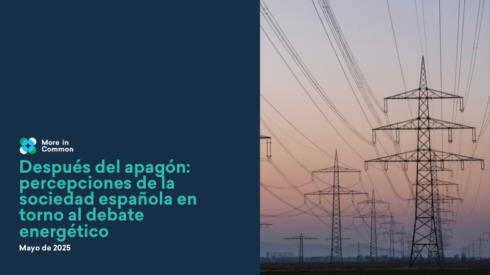
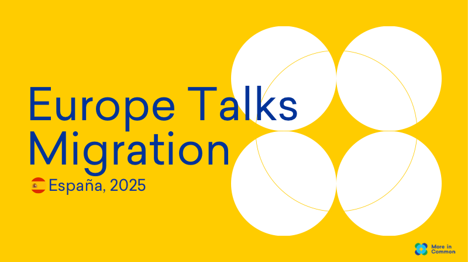
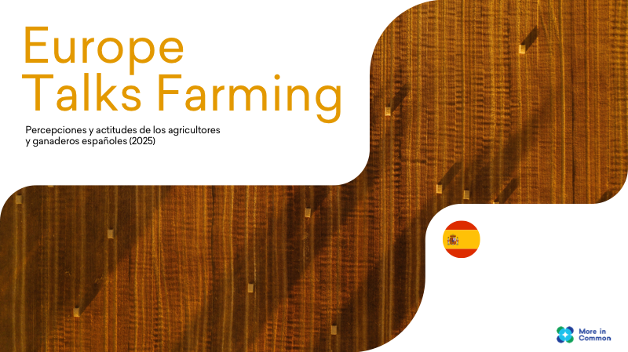
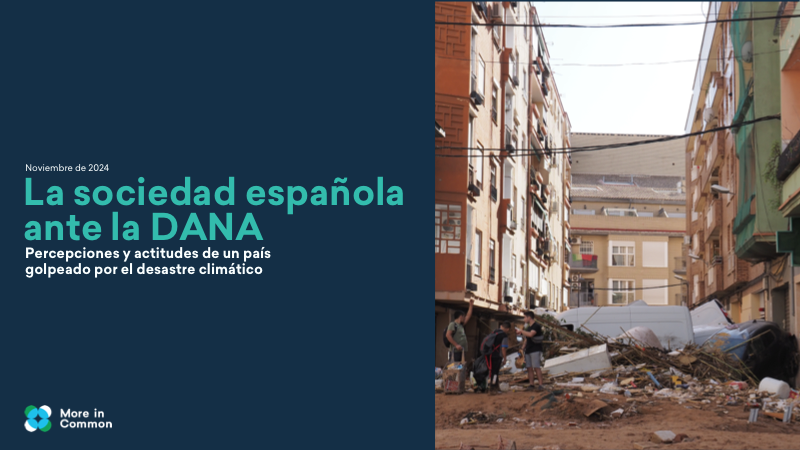

Vivienda
Vivienda
Vivienda: diagnóstico y soluciones
Un estudio en profundidad sobre la crisis de la vivienda en España que analiza las percepciones ciudadanas sobre el problema, evalúa las causas percibidas y explora el apoyo a las distintas soluciones propuestas por la sociedad y los responsables políticos.
Descargar PDF Acogida
Acogida
Patrocinio comunitario e iniciativas de acogida
Estudio sobre las iniciativas de patrocinio comunitario y acogida en España, analizando las actitudes ciudadanas, los modelos existentes y las oportunidades para fortalecer la integración de las personas refugiadas y migrantes a través de la sociedad civil.
Descargar PDF Polarización
Polarización
Atlas de la Polarización
Un análisis exhaustivo que cartografía las dinámicas de polarización en la sociedad española, identificando las principales líneas de fractura, los factores que las alimentan y los puntos de consenso que a menudo pasan desapercibidos.
Descargar PDF
EnergíaDespués del apagón
Una encuesta realizada inmediatamente tras el apagón eléctrico generalizado ocurrido en España el 28 de abril de 2025 para preguntar a la sociedad española sobre algunos de los debates planteados en torno al modelo energético.
Descargar PDF
MigraciónPercepciones en torno a la inmigración
Europe Talks Migration es un proyecto de investigación de 2025 centrado en las percepciones y actitudes en torno a la inmigración en varios países europeos. Es, además, el primer estudio de opinión pública que hemos realizado en torno a la inmigración en España.
Descargar PDF
AgriculturaHablando con agricultores y ganaderos
Los agricultores y ganaderos tienen un papel fundamental en la transición verde. Un año después de las protestas del campo en Europa, More in Common encuestó a agricultores y ganaderos de diferentes países, incluida España, para conocer sus percepciones hacia el cambio climático, la transición verde y el futuro de su sector.
Descargar PDFLa sociedad española ante la guerra de Ucrania
Tras el tenso encuentro entre los presidentes Trump y Zelensky en el Despacho Oval a principios de 2025, preguntamos a más de 7.000 personas en Estados Unidos, Polonia, Reino Unido, Alemania, Francia y España sobre muchos de los aspectos relacionados con el conflicto y cómo ponerle fin.
Descargar PDF
CrisisLa sociedad española ante la DANA
Principales hallazgos de una encuesta de respuesta rápida realizada pocos días después de la catastrófica DANA que golpeó varias regiones de España a finales de octubre de 2024. Analizamos las percepciones y actitudes de la sociedad en un momento de volatilidad social y política extrema.
Descargar PDF